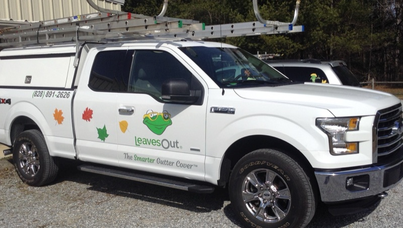
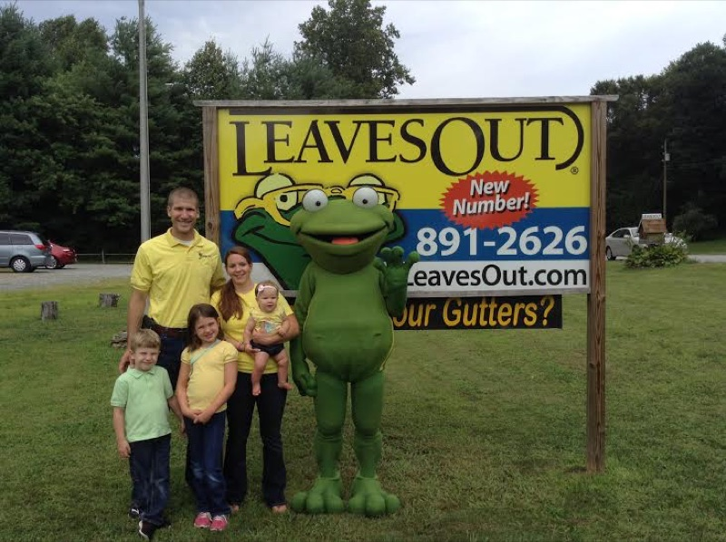
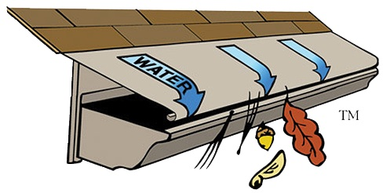

Direct owner communication, specialized mountain equipment, and over two decades of localized gutter protection & seamless gutters experience in Henderson County, NC.

LeavesOut of the Blue Ridge is locally owned and operated by Cory Rose in Hendersonville, NC. As the independent local dealer for Western North Carolina, Cory bought the regional chapter to give homeowners direct, personal service backed by America's premier solid aluminum gutter protection system. Unlike cheap plastic mesh or wire screens that choke on pine needles, wet oak leaves, and mountain debris, LeavesOut uses the physical principle of surface tension to guide rainwater seamlessly into your gutters while shedding all leaves, twigs, and pine needles to the ground. Every system is custom-fitted by Cory with heavy-gauge baked-on enamel aluminum and backed by our Lifetime Transferable No-Clog Warranty.
Authentic field photography from recent residential and commercial mountain contracts.
Full-service mobile workshop equipped with precision roll-forming tools and heavy-gauge solid aluminum gutter protection systems.

📍 Henderson County, NCHands-on master installation ensuring exact slope pitch, secure fascia mounting, and zero penetration of your roof shingles.

📍 Blue Ridge Mountains, NCPhysics-based water adhesion pulls rainwater into the gutter channel while leaves, oak tassels, and pine needles shed harmlessly.
Precision-engineered surface tension technology that curves rainwater directly into gutters while naturally shedding Eastern White Pine needles, oak leaves, and mountain roof debris.
Heavy-gauge 5-inch and 6-inch seamless aluminum gutters custom roll-formed on-site from Cory's mobile workshop to match your Henderson County home's exact roofline.
Specifically engineered for high-density mountain tree canopies across Hendersonville, Flat Rock, and Mills River where wire mesh and micro-screens fail, rot, and cause ice dams.
Complete fascia alignment, gutter slope re-pitching, downspout flushing, and our lifetime transferable guarantee that your gutters will never clog or overflow.
Customized specifically for the elevation, terrain, and soil conditions of local Henderson County properties.
From historic 5th Avenue and Druid Hills to high-altitude ridge homes on Laurel Park and Jump Off Rock, we anchor heavy-gauge aluminum gutter covers that withstand 80mph mountain wind gusts and severe elevation rainfall without shifting.
Homes in Kenmure and Historic Flat Rock are surrounded by towering Eastern White Pines whose 4-inch needles spear through standard mesh covers. LeavesOut's nose-forward surface tension sheds needles effortlessly without penetrating shingles.
Dense mountain oak, poplar blossoms, and river bottom dampness cause severe gutter sludge. LeavesOut keeps gutters bone-clean so spring runoff channels directly away from your foundation and landscaping.
Serving Cummings Cove, Etowah Valley, and Morgan Mill with 20+ custom baked-on enamel colors designed to meet strict HOA architectural guidelines while delivering lifetime no-clog reliability.
High-capacity seamless aluminum gutters roll-formed on-site to handle sudden Blue Ridge cloudbursts, paired with high-volume downspouts and hidden screw hangers.
Dense mountain shade near Lake Summit and the Green River Gorge causes heavy winter freezing. Solid aluminum protects your fascia boards from rot and prevents heavy snow slides from ripping gutters off.
Building and operating in the Blue Ridge Mountains is fundamentally different from flatland trade work. From weathered granite outcrops and heavy clay soil runoff to extreme winter freeze-thaw cycles, LeavesOut of the Blue Ridge utilizes heavy-duty equipment specifically tailored to steep topography and local environmental codes.
"We’ve had some heavy mountain downpours since LeavesOut was installed by Cory, and all rainwater goes right into the gutters just as he said it would. Cory installed the system at his estimated cost and within the time frame discussed. He left the work site spotless. Highly recommend Cory to anyone in Henderson County!"
"We were very pleased with the quality of the product, the craftsmanship, and the minimal impact to our home and landscaping. Cory and his installation team are true professionals. Oh, and they work exactly as advertised!"
"Living in the woods in Cummings Cove with massive white pines, our gutters used to fill up and overflow within weeks. Since Cory installed LeavesOut, we haven't climbed a ladder once. Worth every single penny."
"Our home on Jump Off Rock has steep pitches and heavy wind. Cory came out personally, estimated the job fairly, and had the whole house completed in a day. The dark bronze matches our trim perfectly."
"No more paying handymen to clean gutters twice every autumn in Mills River. The lifetime no-clog warranty is completely legit, and Cory's direct communication was refreshing."
Yes, absolutely. Henderson County is famous for dense stands of Eastern White Pine whose long, slender needles clog traditional wire mesh and perforated screens. LeavesOut features a solid aluminum, nose-forward curved hood with zero openings on top. Water adheres to the curve via surface tension and enters the gutter, while pine needles cannot make the curve and fall harmlessly to the ground.
Cory Rose and LeavesOut of the Blue Ridge provide full installation and maintenance throughout Hendersonville, Flat Rock, Mills River, Laurel Park, Fletcher, Etowah, Horse Shoe, Balfour, Mountain Home, Dana, Edneyville, Saluda, Tuxedo, Zirconia, Brevard, and South Asheville/Arden.
No. Unlike older gutter covers that nail directly into or under your roof shingles (which can void manufacturer shingle warranties), LeavesOut is engineered to mount securely directly to your fascia board or gutter lip with heavy-duty patented brackets. Your shingles remain completely untouched and fully protected.
LeavesOut is lab-tested and field-proven to handle over 11 inches of rainfall per hour—far exceeding even the most intense tropical storm downpours ever recorded in the Blue Ridge Mountains. The patented surface tension design channels 100% of water directly into the downspouts.
Yes! The LeavesOut Lifetime No-Clog Warranty transfers seamlessly to the next homeowner. If your gutters ever clog with LeavesOut installed, Cory Rose will come out and clean or service them completely free of charge.
Yes. LeavesOut comes in over 20 baked-on enamel colors—including dark bronze, musket brown, forest green, clay, white, and copper penny—to match your existing roofline, fascia trim, or custom siding seamlessly.
Skip the dispatch answering services. Talk straight with the owner and lead technician about your project scope, scheduling, and on-site estimate.
(828) 891-2626